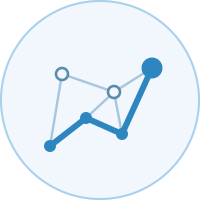

AI & Digital Finance Lab 人工智能与数字金融实验室
About关于
Welcome to our AI & Digital Finance Lab! Our group investigates problems at the intersection of statistics, machine learning, and financial markets, with a focus on the Blockchain × Digital Assets × Digital Finance space.
欢迎访问人工智能与数字金融实验室！我们的团队致力于研究统计学、机器学习与金融市场交叉领域的问题，重点关注区块链 × 数字资产 × 数字金融领域。
Our goal is to combine rigorous statistical theory with modern machine learning to study how digital assets behave, how risk propagates through decentralised systems, and what this means for markets and policy.
我们的目标是将严谨的统计理论与现代机器学习相结合，研究数字资产的行为特征、风险在去中心化系统中的传导机制，以及由此对市场与政策产生的影响。
Our team is based in the School of Statistics at Renmin University of China, and collaborates with researchers across statistics, economics, and computer science, within China and globally.
我们的团队设于中国人民大学统计学院，并与国内外统计学、经济学及计算机科学领域的研究者广泛合作。
Research Areas研究方向
Our research spans a wide range of topics including (but not limited to):
我们的研究涵盖广泛的主题，包括但不限于：
- Network analysis, stylised facts, and market dynamics of cryptocurrency, blockchain, and DeFi systems.
- Machine learning for fraud and anomaly detection in financial networks.
- Statistical distribution theory and econometric modelling for digital assets.
- AI-driven financial innovation and its regulatory implications.
- 加密货币、区块链与 DeFi 系统的网络分析、程式化事实与市场动态。
- 面向金融网络的欺诈与异常检测的机器学习方法。
- 面向数字资产的统计分布理论与计量经济建模。
- 人工智能驱动的金融创新及其监管影响。
Notices通知
None.
暂无。
News新闻动态
One paper accepted in International Review of Economics & Finance!
一篇论文被《国际经济与金融评论》录用！
One paper accepted at WWW'26!
一篇论文被 WWW'26 录用！
One paper accepted in Physica A: Statistical Mechanics and its Applications!
一篇论文被《Physica A：统计力学及其应用》录用！
One paper accepted in the Journal of the Royal Statistical Society: Series A!
一篇论文被《英国皇家统计学会会刊：A辑》录用！
One paper accepted at IEEE ICDM 2025!
一篇论文被 IEEE ICDM 2025 录用！
One paper accepted in Applied Economics Letters!
一篇论文被《应用经济学快报》录用！
Selected Publications代表性论文
Research Projects科研项目
Anomaly detection methods for blockchain-based networks
面向区块链网络的异常检测方法
Research on Detecting Illicit Activity in Digital Cryptocurrency Networks
数字加密货币网络中非法活动检测研究
Graph-Theoretic Analysis for Consumer Credit Risk Assessment in Personal Lending
个人信贷消费者信用风险评估的图论分析
Events学术活动
Collaborative Partnerships合作伙伴
Our group has existing research collaborations with researchers from the institutions and groups below, but welcomes collaboration with academic and industry partners working on digital assets and financial data. Please get in touch to discuss joint projects or data partnerships.
本团队与以下机构及组织的研究人员保持着长期的科研合作，同时也欢迎与从事数字资产与金融数据研究的学术界及产业界伙伴开展合作。欢迎联系洽谈合作项目或数据合作。

The Team团队
Jeffrey Chu — Associate Professor, School of Statistics.
朱杰飞 — 统计学院副教授。
The team comprises five postgraduate students in the School of Statistics, Renmin University of China.
团队由中国人民大学统计学院的五名研究生组成。